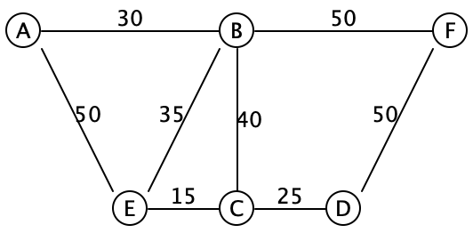

Problem: Routing from a location to another, with each road with a 'distance' value.
Find the shortest route.
Graphs:
A collection of vertices (nodes) and edges between vertices.
e.g. A Social graph tracks relationships (edges) between people (vertices).
Can be directed or undirected => one way roads.
NB: Can always solve undirected graph using a directed graph (just that all directions also have a reverse)
Can be weighted => each edge has a 'cost' to use. e.g. roads having a distance. Flight having a particular price.
NB: Can solve unweighted by setting weights all to 1.
Graphs may also contain cycles (A->B->C->A...)
How to represent this data in Java?
ArrayList<ArrayList<weight>>> => "Adjacency Matrix" representation
IList<Vertex> for list of all verticesNumber of edges in an 'n' graph: n*n-1 => O(n^2), best case: omega(n)
Memory use: adjacency matrix is O(V^2), whereas adjacency list O(V+E)
Check a Vertex has a path to a give destination:
// In Vertex
boolean hasPathTo(Vertex dest) {
for (Edge e : this.outEdges) {
if ( e.to == dest // can get there in just one step
|| e.to.hasPathTo(dest)) { // can get there on a path through e.to
return true;
}
}
return false;
}// In Vertex
boolean hasPathTo(Vertex dest) {
for (Edge e : this.outEdges) {
if ( e.to == dest // can get there in just one step
|| e.to.hasPathTo(dest)) { // can get there on a path through e.to
return true;
}
}
return false;
}BUT! Cycles may exist, which loop indefinitely. Track 'already seen' vertices, using Deques.
Deque but we exaust one 'neighborhood' before we move onto the next.
Run time:
DFS - Omega(1), O(V^2 + E) => O(V^2).
Instead... process a vertex completely before backtracking? Done by adding to tail of deque/worklist.
Doesn't affect memory or runtime of algorithm though.
Generally we're adding to the worklist:
interface ICollection<T> {
//Is collection empty?
boolean isEmpty();
//EFFECT: add item to collection
void add(T item);
//Returns first item of collection,
//EFFECT: removes the first item
T remove();
}interface ICollection<T> {
//Is collection empty?
boolean isEmpty();
//EFFECT: add item to collection
void add(T item);
//Returns first item of collection,
//EFFECT: removes the first item
T remove();
}Implement both with a Deque -
Stack: LIFO : Last In First Out
class Stack<T> implements ICollection<T> {
Deque<T> contents;
Stack() {
this.contents = new Deque<T>();
}
public boolean isEmpty() {
return this.contents.isEmpty();
}
public T remove() {
return this.contents.removeFromHead();
}
public void add(T item) {
this.contents.addAtHead(item);
}
}class Stack<T> implements ICollection<T> {
Deque<T> contents;
Stack() {
this.contents = new Deque<T>();
}
public boolean isEmpty() {
return this.contents.isEmpty();
}
public T remove() {
return this.contents.removeFromHead();
}
public void add(T item) {
this.contents.addAtHead(item);
}
}Queue: FIFO - First In First Out
class Queue<T> implements ICollection<T> {
Deque<T> contents;
Queue() {
this.contents = new Deque<T>();
}
public boolean isEmpty() {
return this.contents.isEmpty();
}
public T remove() {
return this.contents.removeFromHead();
}
public void add(T item) {
this.contents.addAtTail(item); // NOTE: Different from Stack!
}
}class Queue<T> implements ICollection<T> {
Deque<T> contents;
Queue() {
this.contents = new Deque<T>();
}
public boolean isEmpty() {
return this.contents.isEmpty();
}
public T remove() {
return this.contents.removeFromHead();
}
public void add(T item) {
this.contents.addAtTail(item); // NOTE: Different from Stack!
}
}Can use both these classes above - and plug in either collection to:
// In Graph
boolean bfs(Vertex from, Vertex to) {
return searchHelp(from, to, new Queue<Vertex>());
}
boolean dfs(Vertex from, Vertex to) {
return searchHelp(from, to, new Stack<Vertex>());
}
boolean searchHelp(Vertex from, Vertex to, ICollection<Vertex> worklist) {
Deque<Vertex> alreadySeen = new Deque<Vertex>();
// Initialize the worklist with the from vertex
worklist.add(from);
// As long as the worklist isn't empty...
while (!worklist.isEmpty()) {
Vertex next = worklist.remove();
if (next.equals(to)) {
return true; // Success!
}
else if (alreadySeen.contains(next)) {
// do nothing: we've already seen this one
}
else {
// add all the neighbors of next to the worklist for further processing
for (Edge e : next.outEdges) {
worklist.add(e.to);
}
// add next to alreadySeen, since we're done with it
alreadySeen.addAtHead(next);
}
}
// We haven't found the to vertex, and there are no more to try
return false;
}// In Graph
boolean bfs(Vertex from, Vertex to) {
return searchHelp(from, to, new Queue<Vertex>());
}
boolean dfs(Vertex from, Vertex to) {
return searchHelp(from, to, new Stack<Vertex>());
}
boolean searchHelp(Vertex from, Vertex to, ICollection<Vertex> worklist) {
Deque<Vertex> alreadySeen = new Deque<Vertex>();
// Initialize the worklist with the from vertex
worklist.add(from);
// As long as the worklist isn't empty...
while (!worklist.isEmpty()) {
Vertex next = worklist.remove();
if (next.equals(to)) {
return true; // Success!
}
else if (alreadySeen.contains(next)) {
// do nothing: we've already seen this one
}
else {
// add all the neighbors of next to the worklist for further processing
for (Edge e : next.outEdges) {
worklist.add(e.to);
}
// add next to alreadySeen, since we're done with it
alreadySeen.addAtHead(next);
}
}
// We haven't found the to vertex, and there are no more to try
return false;
}Breadth first will find shortest path between two vertices, in terms of number of edges needed. Optimal if unweighted.
What if weighted?
What if we use a PriorityQueue?
Use each edge's weight as priorities.
Approach - weight of individual edge AND total cost to get to node so far.
So priority account for total path, and if promising path more expensive than thought - cheaper path will beat to front of priority queue.
Cheapest-first search: O(E log2E)
Now generalization of the above code to include Dijkstra's algorithm. Going to leave details of this implementation till Algorithms courses.
Using other, more sophisticated (and complex) heap implementations can bring down the cost of this algorithm to something cheaper, 𝑂(𝐸+𝑉log2𝑉). Obtaining this better efficiency is beyond the scope of Fundies 2 — look forward to it in algorithms!
https://www.youtube.com/watch?v=6WZo7sFFFlQ&list=PL_N7YxtCMPyea2YC3e-1s7SR_S3oWGjdb
Problem description: connect all towns to power stations, ensure everyone gets connected. No backups considered.
Minimal costs incurred.
class Vertex {
ArrayList<Edge> outEdges;
}
class Edge {
Vertex from, to;
int weight;
}
class Graph {
ArrayList<Vertex> vertices;
}class Vertex {
ArrayList<Edge> outEdges;
}
class Edge {
Vertex from, to;
int weight;
}
class Graph {
ArrayList<Vertex> vertices;
}As Base.

Edges without directional arrows, numbers on edges = weight.
Can pick the two lowest easily to get EC, CD.
Next? AB is cheapest but not connected. BE is next cheapest AND connected.
To produce a minimum spanning tree, there are three criteria we need to establish: minimality, spanning-ness and tree-ness.
Prims:
// The final resulting tree ArrayList<Edge> tree = new ArrayList<Edge>(); // The set of connected vertices HashMap<Vertex, Boolean> connected = new HashMap<Vertex, Boolean>(); // The priority queue of candidate edges PriorityQueue<Edge> frontier = new PriorityQueue<Edge>(); // If the graph's vertices are empty, just return the empty tree // Initialize the connected map to map each vertex to false // Pick some initial vertex, v. Set its connectedness to true, and add // all its edges to the frontier. // While(the frontier is not empty) // Pick the cheapest edge from the frontier, suppose it connects X to Y. // If Y is already connected to the tree: // Discard this edge // it would create a cycle // Else: // Add the edge XY to the tree // Mark Y as connected // Add all the out-edges of Y to the frontier // Return the tree
// The final resulting tree
ArrayList<Edge> tree = new ArrayList<Edge>();
// The set of connected vertices
HashMap<Vertex, Boolean> connected = new HashMap<Vertex, Boolean>();
// The priority queue of candidate edges
PriorityQueue<Edge> frontier = new PriorityQueue<Edge>();
// If the graph's vertices are empty, just return the empty tree
// Initialize the connected map to map each vertex to false
// Pick some initial vertex, v. Set its connectedness to true, and add
// all its edges to the frontier.
// While(the frontier is not empty)
// Pick the cheapest edge from the frontier, suppose it connects X to Y.
// If Y is already connected to the tree:
// Discard this edge // it would create a cycle
// Else:
// Add the edge XY to the tree
// Mark Y as connected
// Add all the out-edges of Y to the frontier
// Return the treeIf generalize the map a bit... map vertices to other vertices.
The goal of the union/find data structure is to allow us to take a set of items (such as nodes in a graph) and partition them into groups (such as nodes connected by spanning trees) in such a way that we can easily find whether two nodes are in the same group, and union two disjoint groups together. Intuitively, we accomplish this by naming each group by some representative element, and then two items can be checked for whether they are in the same group by checking if they have the same representative element.
Suppose each of our vertices was given a string name (as we’ve been labelling the vertices so far). Then the union-find data structure is a HashMap<String, String> that maps (the name of) each node to (the name of) a node that it is connected to.
Initially, every node name is mapped to itself, signifying that every node is its own representative element, or equivalently, that it is not connected to anything.
Kruskal's algorithm - sort list of edges by weight.
EC(15), CD(25), AB(30), BE(35), BC(40), FD(50), AE(50), BF(50)
Node: | A | B | C | D | E | F |
Link: | A | B | C | D | E | F |
== Then ==
Node: | A | B | C | D | E | F |
Link: | A | B | E | D | E | F |
== Then ==
Node: | A | B | C | D | E | F |
Link: | A | B | E | E | E | F |
At this point - E <= (C,D)
Keep Going until:
\ +---+---+---+---+---+---+ E
Node: | A | B | C | D | E | F | ^
+---+---+---+---+---+---+ / | \
Link: | E | A | E | E | E | D | A C D
+---+---+---+---+---+---+ ^ ^
| |
B F
Spanning tree so far: (A B) (B E) (C D) (C E) (D F) \ +---+---+---+---+---+---+ E
Node: | A | B | C | D | E | F | ^
+---+---+---+---+---+---+ / | \
Link: | E | A | E | E | E | D | A C D
+---+---+---+---+---+---+ ^ ^
| |
B F
Spanning tree so far: (A B) (B E) (C D) (C E) (D F)